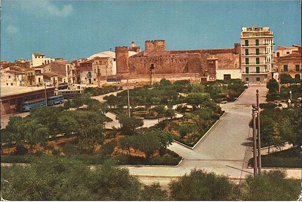

La sua origine si fa risalire alla metà del XIV secolo è nata come piazza d’armi per le esercitazioni militari. L'unico edificio allora esistente era la Chiesa di Santa Maria di Gesù e il suo convento dei Frati minori a sud di essa, mentre sui lati della piazza si trovavano solo dei piccoli fabbricati rurali. Nel primo Ottocento il castello venne ceduto al Comune da parte degli ultimi Conti di Modica e di conseguenza la piazza cessò di avere l'uso per il quale era stata creata. Più tardi l'amministrazione comunale collocò un abbeveratoio nella piazza, ed un altro in Piano Santa Maria. L'area venne dapprima denominata Piazza del Progresso, in quanto si trovava al centro di una zona in piena espansione. Nel 1903, dopo l'attentato anarchico che costò la vita ad Umberto I, fu intitolata allo stesso, ma con l'avvento della Repubblica nel 1946, prese il nome attuale. Dal 1922 al 1946 la piazza fu utilizzata come campo di calcio poiché era l'unica grande area disponibile per svolgere l'attività calcistica. Negli anni 60 è stata asfaltata, ed è stata costruita l'autostazione con le due pensiline; nello stesso periodo è stata sistemata la villa, creandovi delle aiuole, mettendo degli alberi, fiori e panchine.